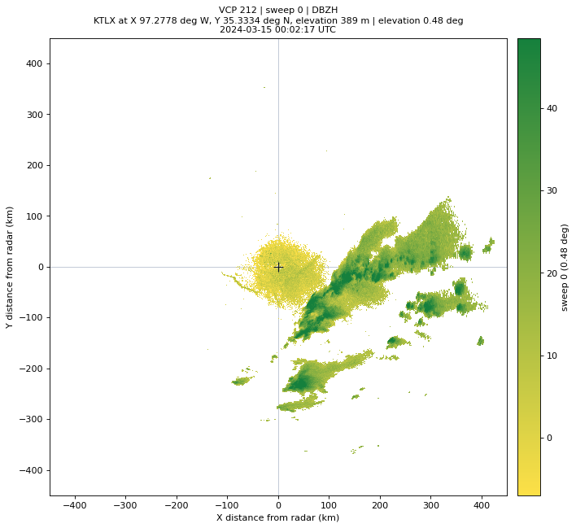
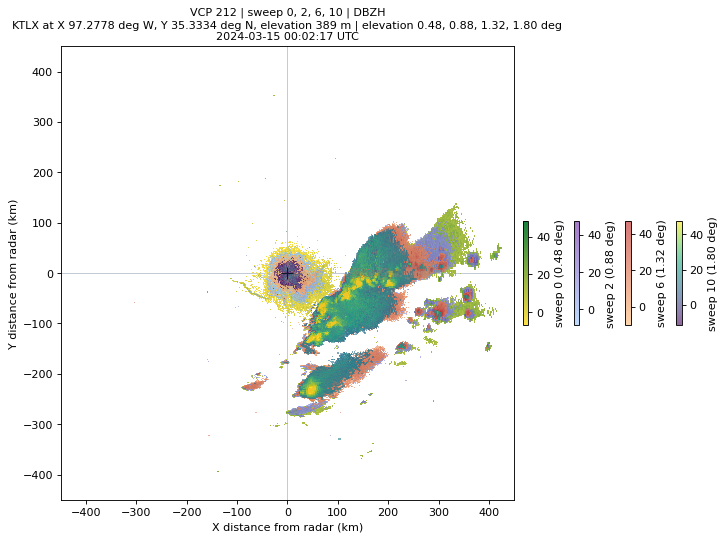
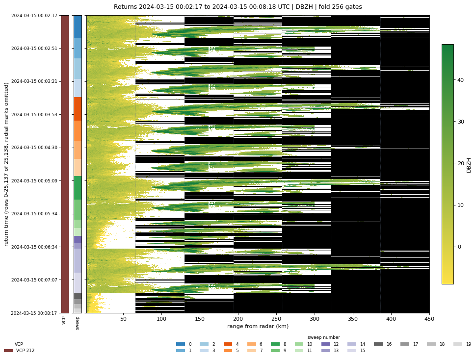
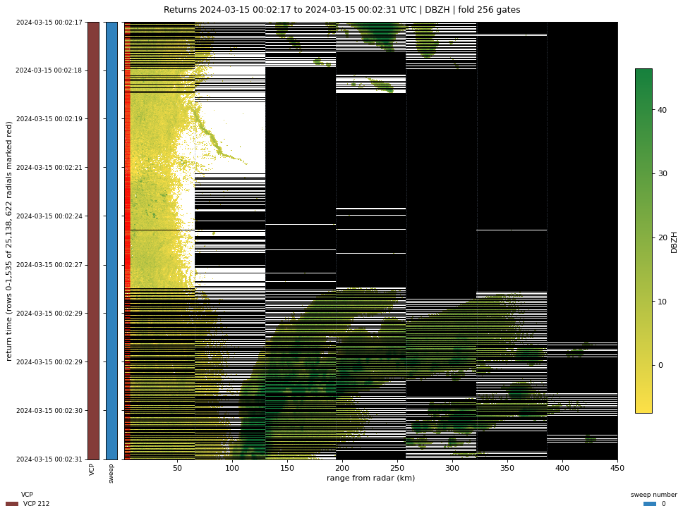

Visualization¶
radrs.viz plots a raystack DataTree directly. Every function takes the tree
that rrs.open_datatree or BatchedRaystack.finalize_to_rs_dt returns, and
hands back something a notebook displays as-is: a matplotlib (Figure, Axes)
pair, or a pydeck Deck.
Install the plotting dependencies with the viz extra:
Raystack returns are folded — each row holds fold_size gates starting at
that row's base_range, so several rows make up one radial. Every function
here unfolds first, placing each row at its true distance from the radar, which
is why the axes are in kilometres rather than gate indices. See
Raystack format for what folding does to the layout.
plot_sweep / plot_sweeps¶
A PPI in kilometres from the radar. plot_sweep is the single-sweep shorthand;
plot_sweeps is the real implementation.
import radrs.raystack as rrs
import radrs.viz as viz
src = "s3://unidata-nexrad-level2/2024/03/15/KTLX/KTLX20240315_000217_V06"
rs_dt = rrs.open_datatree(src, fold_size=256)
fig, ax = viz.plot_sweep(rs_dt, 0)

The title carries the VCP number, sweep number, moment, and the site's X, Y and elevation coordinates, so a saved figure stays self-describing.
Pass several sweeps and they overlay, each in its own colormap — yellow to green, then blue to purple, then orange to red, then matplotlib defaults. NaN gates are transparent, so lower sweeps show through the gaps in higher ones:

alpha sets the transparency of every sweep after the first, which is drawn
opaque. Colorbars stack on the right in sweep order, capped at eight.
plot_waterfall¶
Every return drawn against true range, stacked in time — the raystack layout itself, unfolded.

The color rules are what make this readable:
- Black is range that no fold ever covered. The black wedges on the right are the higher sweeps, which stop far short of the 460 km surveillance cut.
- White is a gate that was sampled and came back NaN — below threshold, range folded, or trailing padding at the end of a radial.
- Dotted vertical lines mark where each fold window begins, every 64 km at
fold_size=256.
Two strips run down the left, aligned with the rows: VCP number in tab20b,
ruled black at each volume boundary, and sweep number in tab20c. Both get a
legend underneath.
A volume is far more returns than a figure has pixels, so rows and range bins
are block-reduced to fit max_rows and max_cols. reduce="max" keeps echoes
crisp; use reduce="mean" for signed moments like VRADH.
Reading the fold structure¶
Red ticks inside the left edge mark each distinct return time. Past ~2000 radials they would merge into a solid bar, so the function drops them and says so on the axis. Window the rows to bring them back:

Zoomed in, each radial's folds read as a staircase: consecutive rows step one 64 km window to the right, and the red ticks separate one radial from the next. Radials that ran out of gates early leave their later windows black.
plot_geo¶
Finite gates as a 3-D point cloud on a real-world map. Returns a pydeck.Deck,
which marimo and Jupyter display directly; the view rotates, so the vertical
structure of the volume is legible from the side.
Gates are geolocated with the standard 4/3-earth-radius refraction model, so altitudes are above mean sea level, not above the radar. The site itself is marked in red.
Two arguments matter more than the rest:
min_valuedrops weak gates. Without it a whole volume of near-threshold returns fogs the map and hides the storm; 20 dBZ is a reasonable floor forDBZH.max_points(default 30,000) caps what gets rendered. deck.gl data travels as JSON at roughly 90 bytes a point, so this bounds the notebook output size. Gates beyond the cap are dropped by strided subsampling, which is deterministic — the same raystack always renders the same cloud.
viz.gate_positions returns the same geolocated arrays without building a
deck, if you want to feed them somewhere else.
Exploring interactively¶
notebooks/raystack_viz.py wires all of the above to live controls. It pulls
volumes straight from the public NEXRAD archives, so it needs no local data —
the figures on this page are its defaults.
Part 1 builds a raystack from an archive URL, instrument name, time range and fold size; there is no load button, so editing a control re-fetches. Part 2 is a configuration cell and a plot cell for each function above, which is the quickest way to find the arguments you want before writing them down.
Use marimo run instead of marimo edit to open it as an app: controls only,
no source.
Picking a moment¶
available_moments lists what a tree actually carries, QC outputs included:
viz.available_moments(rs_dt) # ['DBZH', ..., 'qc.rhohv_threshold_mask']
viz.available_moments(rs_dt, include_qc=False)
vcp_infos and sweep_infos describe what is selectable, with labels built
for dropdowns:
[info.label for info in viz.vcp_infos(rs_dt)]
# ['00 | VCP 212 | 2024-03-15 00:02:17']
[info.label for info in viz.sweep_infos(rs_dt, vcp_num=0)]
# ['sweep 0 | elev 0.48 deg | 5,760 returns', ...]
vcp_num is an index into the VCPs in time order, not the NEXRAD pattern
number — 0 is the first volume in the raystack, whatever pattern it ran.